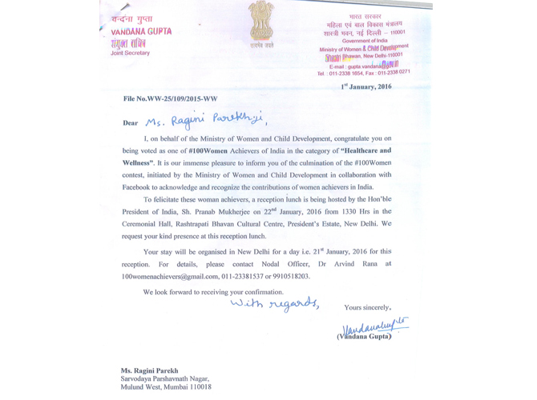
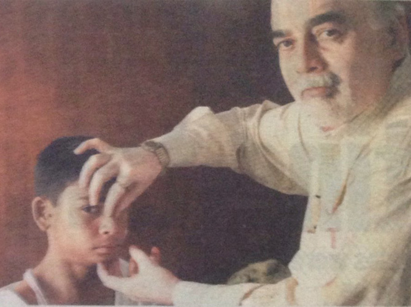

| Welcome to Sir JJ Group of Hospitals |
|---|
| Home | About Us | Department | News | Events | Doctors | Gallery | RTI | Contact |
|---|
| ||||||||||||||
| News from Health and Medical | ||
|  Congratulation Dr. Ragini Parekh being voted as one of #100Women achievers of India January 1, 2016 Congratulation Dr. Ragini Parekh being voted as one of #100Women achivers of India  | Dr. T P Lahane receiving the prestigious Honour & Award of Padmashree January 24, 2015 Professor & Dean of Grant Government Medical College Dr. T P Lahane receiving the prestigious Honour... |  Deepika's dimples, nose like Kareena's, for Rs 200 January 24, 2015 For the price of a McDownald's meal, the ENT department of JJ Hospital in Byculla performs cosmetic surgery |
|
About JJ Group of Hospitals The Grant Medical College & Sir J.J. Group of Hospitals is a premier Medical Institution of India under Government of Maharashtra. Sir Robert Grant (1780-1838) on becoming Governor of Bombay in August 1834 was deeply touched by the vast number of Indian's who used to die for want of proper medical care. |
Contact Us JJ Group of Hospitals, J J Marg, Nagpada-Mumbai Central, Off Jijabhoy Road, Mumbai - 400008. Phone :+(91)-22-23735555, 23754995, 23739400, 23750102, 23739034, 23739035, 23739040 Fax :+(91)-22-23735599 |
Quock Links Home About Us News Events | Departments Doctors Gallery Contact Us |
Newsletter Sign Up Stay updated with latest news from JJ Group of Hospitals. Name: Email: |